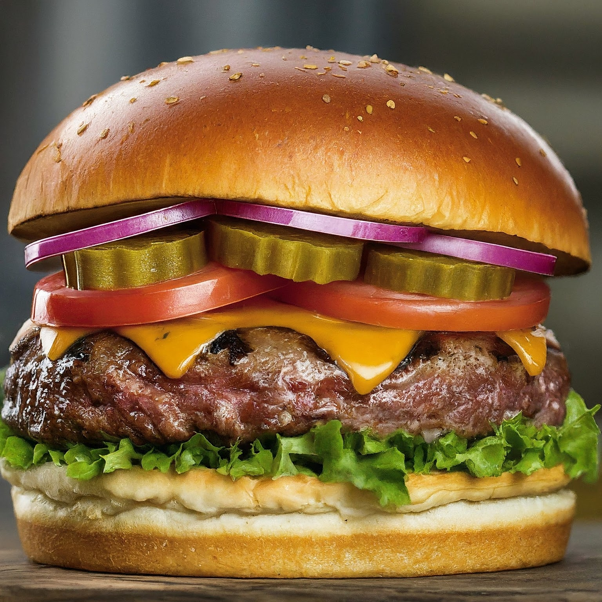

Burger

Description
Who doesn't love a good burger? Start with a juicy beef patty,
cooked to perfection. Add your favorite cheese, like cheddar or
Swiss, and melt it over the patty while it's still hot. Place the
patty on a toasted bun and top with fresh lettuce, tomato, and any
other toppings you desire. Don't forget the condiments - ketchup,
mustard, and mayo are classic choices. Serve with a side of crispy
fries or a fresh salad for a delicious meal!
Ingredients
- Beef Patty
- Cheese
- Lettuce
- Tomato
- Burger Bun
- Condiments (Ketchup, Mustard, Mayo)
Steps
-
Start with a fresh beef patty - you can season it with salt and
pepper for extra flavor.
-
Cook the patty on a hot grill or skillet until it reaches your
desired level of doneness.
-
While the patty is still hot, add a slice of your favorite
cheese on top to melt.
-
Toast the burger bun until golden brown and assemble your burger
with the patty, cheese, lettuce, and tomato.
-
Don't forget the condiments - spread ketchup, mustard, and mayo
on the bun for extra flavor.
-
Serve your delicious burger with a side of crispy fries or a
fresh salad for a complete meal!